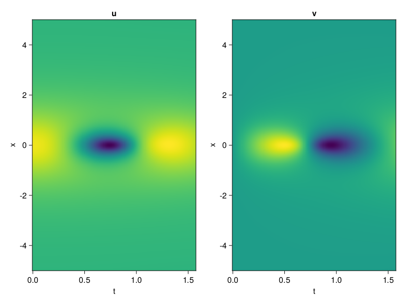
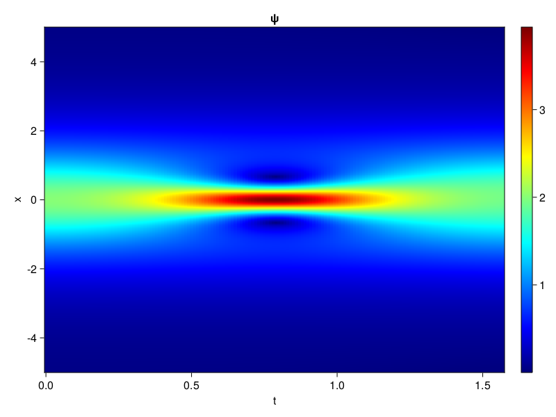
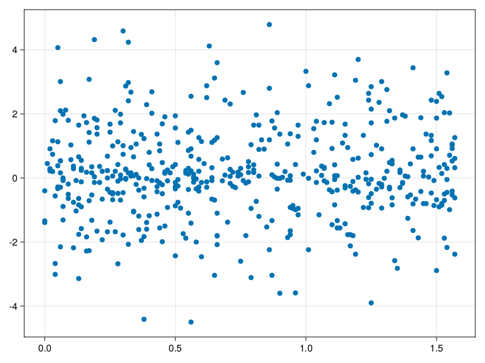

Schrödinger equation
The nonlinear Shrödinger equation is given by
\[\mathrm{i} \partial_t \psi=-\frac{1}{2} \sigma \partial_{x x} \psi-\beta|\psi|^2 \psi\]
Let $\sigma=\beta=1, \psi=u+v i$, the equation can be transformed into a system of partial differential equations
using ModelingToolkit, IntervalSets, Sophon, CairoMakie
using Optimization, OptimizationOptimJL
@parameters x,t
@variables u(..), v(..)
Dₜ = Differential(t)
Dₓ² = Differential(x)^2
eqs=[Dₜ(u(x,t)) ~ -Dₓ²(v(x,t))/2 - (abs2(v(x,t)) + abs2(u(x,t))) * v(x,t),
Dₜ(v(x,t)) ~ Dₓ²(u(x,t))/2 + (abs2(v(x,t)) + abs2(u(x,t))) * u(x,t)]
bcs = [u(x, 0.0) ~ 2sech(x),
v(x, 0.0) ~ 0.0,
u(-5.0, t) ~ u(5.0, t),
v(-5.0, t) ~ v(5.0, t)]
domains = [x ∈ Interval(-5.0, 5.0),
t ∈ Interval(0.0, π/2)]
@named pde_system = PDESystem(eqs, bcs, domains, [x,t], [u(x,t),v(x,t)])\[ \begin{align} \frac{\mathrm{d}}{\mathrm{d}t} u\left( x, t \right) =& - \frac{1}{2} \frac{\mathrm{d}}{\mathrm{d}x} \frac{\mathrm{d}}{\mathrm{d}x} v\left( x, t \right) - \left( \left|u\left( x, t \right)\right|^{2} + \left|v\left( x, t \right)\right|^{2} \right) v\left( x, t \right) \\ \frac{\mathrm{d}}{\mathrm{d}t} v\left( x, t \right) =& \frac{1}{2} \frac{\mathrm{d}}{\mathrm{d}x} \frac{\mathrm{d}}{\mathrm{d}x} u\left( x, t \right) + \left( \left|u\left( x, t \right)\right|^{2} + \left|v\left( x, t \right)\right|^{2} \right) u\left( x, t \right) \end{align} \]
pinn = PINN(u = Siren(2,1; hidden_dims=16,num_layers=4, omega = 1.0),
v = Siren(2,1; hidden_dims=16,num_layers=4, omega = 1.0))
sampler = QuasiRandomSampler(500, (200,200,20,20))
strategy = NonAdaptiveTraining(1,(10,10,1,1))
prob = Sophon.discretize(pde_system, pinn, sampler, strategy)OptimizationProblem. In-place: true
u0: ComponentVector{Float64}(u = (layer_1 = (weight = [0.00674593448638916 0.39867323637008667; -0.10919636487960815 0.063102126121521; … ; -0.30897706747055054 0.25863879919052124; -0.22897380590438843 -0.41621822118759155], bias = [0.0; 0.0; … ; 0.0; 0.0;;]), layer_2 = (weight = [0.5644150376319885 -0.26078420877456665 … -0.5678520202636719 0.15523822605609894; 0.17522823810577393 -0.00708644837141037 … 0.333161324262619 0.36685988306999207; … ; -0.13385696709156036 -0.5312125086784363 … -0.1026049479842186 -0.026286596432328224; -0.4556058347225189 -0.3193804621696472 … -0.5994918346405029 -0.159812793135643], bias = [0.0; 0.0; … ; 0.0; 0.0;;]), layer_3 = (weight = [-0.13102111220359802 0.020356111228466034 … -0.3197513818740845 0.12045101076364517; -0.18456098437309265 0.05282577499747276 … -0.3958802819252014 0.13913074135780334; … ; -0.6038986444473267 0.5784116387367249 … -0.1708894520998001 -0.4532838463783264; 0.4801371395587921 0.5659835934638977 … -0.2436712235212326 -0.013082927092909813], bias = [0.0; 0.0; … ; 0.0; 0.0;;]), layer_4 = (weight = [-0.570894718170166 0.5566467046737671 … 0.5462562441825867 0.4988490641117096; -0.3733365535736084 -0.5536788702011108 … -0.2076355516910553 -0.5976241230964661; … ; 0.169717937707901 -0.11142843961715698 … -0.15871888399124146 -0.16029159724712372; 0.3821164667606354 -0.5375708341598511 … 0.3657664954662323 0.09511743485927582], bias = [0.0; 0.0; … ; 0.0; 0.0;;]), layer_5 = (weight = [0.062248166650533676 0.1196163222193718 … 0.37112128734588623 -0.14642933011054993], bias = [0.0;;])), v = (layer_1 = (weight = [0.43281280994415283 0.14162284135818481; 0.30799126625061035 -0.48758310079574585; … ; 0.354539692401886 0.29541027545928955; 0.1688014268875122 -0.0800161361694336], bias = [0.0; 0.0; … ; 0.0; 0.0;;]), layer_2 = (weight = [-0.3935023546218872 0.519677996635437 … -0.4758469760417938 0.48442256450653076; -0.5010978579521179 -0.47161242365837097 … 0.1890592724084854 0.37596896290779114; … ; -0.4532846510410309 0.24946263432502747 … 0.24329861998558044 -0.06657074391841888; -0.27418214082717896 0.5779098868370056 … 0.26693448424339294 0.08916052430868149], bias = [0.0; 0.0; … ; 0.0; 0.0;;]), layer_3 = (weight = [0.09094604104757309 -0.3863585293292999 … -0.06942907720804214 0.14127270877361298; 0.457782119512558 0.40221336483955383 … -0.48723503947257996 -0.2799452245235443; … ; 0.23494429886341095 -0.16650022566318512 … -0.49320751428604126 -0.12075111269950867; -0.3753330409526825 -0.16198375821113586 … -0.12692855298519135 -0.21336835622787476], bias = [0.0; 0.0; … ; 0.0; 0.0;;]), layer_4 = (weight = [0.13646015524864197 0.2986980378627777 … -0.15712623298168182 -0.26689785718917847; 0.15397217869758606 0.08393573015928268 … -0.057188648730516434 -0.4259417951107025; … ; -0.22780150175094604 -0.5349512100219727 … 0.4627159535884857 -0.5964848399162292; -0.3307599723339081 0.3918702304363251 … -0.6062268614768982 0.3860362470149994], bias = [0.0; 0.0; … ; 0.0; 0.0;;]), layer_5 = (weight = [0.300798624753952 -0.44204971194267273 … -0.0012914515100419521 0.15205509960651398], bias = [0.0;;])))Now we train the neural nets and resample data while training.
function train(pde_system, prob, sampler, strategy, resample_period = 500, n=10)
bfgs = BFGS()
res = Optimization.solve(prob, bfgs; maxiters=2000)
for i in 1:n
data = Sophon.sample(pde_system, sampler)
prob = remake(prob; u0=res.u, p=data)
res = Optimization.solve(prob, bfgs; maxiters=resample_period)
end
return res
end
res = train(pde_system, prob, sampler, strategy)u: ComponentVector{Float64}(u = (layer_1 = (weight = [0.2137220791458628 0.10443693552570521; -0.6085828904270882 -0.022393461232477617; … ; -0.3826744092859024 0.20158800722698905; 0.06104683227514081 -0.6280220480208174], bias = [0.11263635200043605; 0.3192498260797621; … ; 0.05387461199024201; 0.19601194681232706;;]), layer_2 = (weight = [0.5732802269038371 -0.34085322411965624 … -0.7340166246704163 -0.18612608849677834; 0.10457321227569467 -0.10013085502380592 … 0.033815714622451025 0.14866545954650376; … ; -0.003959949181121015 -0.7351503552821951 … -0.22098074169029852 -0.2041829539749433; -0.661499992060799 -0.6473422581934855 … -0.8715583907184437 0.44487837253681156], bias = [-0.14604508398297786; -0.13004888327130082; … ; -0.30941345880602267; 0.0937618308372893;;]), layer_3 = (weight = [-0.17294689864353088 -0.15751331983158764 … -0.5203381185371175 0.2502097117948819; -0.2345478902571355 -0.21296641037635708 … -0.26755106012663993 -0.012641116366680387; … ; -0.729333737696898 0.6122226427946559 … -0.3164578388746279 -0.7295001670181679; 0.672416729176491 0.4103277193549084 … -0.5043281178237535 -0.20985395689971564], bias = [-0.23117019779168954; -0.23686521210039158; … ; -0.3472326622509626; -0.13672350878946268;;]), layer_4 = (weight = [-0.46609434433946223 0.850042349487697 … 0.270005565669289 0.28725747209359803; -0.2730410410702869 -0.48169243165829845 … -0.06169965556745552 -0.6232514592240629; … ; -0.3552685744943375 0.15069436760374097 … 0.11252969685938227 -0.2419223986383848; 0.209480387018734 -0.7479647176408765 … 0.3470594946999271 0.17171937240843774], bias = [0.3371653026927626; 0.08151720141632336; … ; 0.038616799696373945; 0.5096465985991728;;]), layer_5 = (weight = [-0.30283281016248936 -0.007005731186109082 … 0.922713700171113 -0.5230931326687217], bias = [0.4514730370514218;;])), v = (layer_1 = (weight = [0.27127109269627947 -0.29566517465609127; 0.05532979291575031 -0.8945999211410274; … ; 0.6739465411101984 0.4381607570226896; 0.5181856914891755 -0.29112644322214115], bias = [-0.12410958685309924; -0.03533468102162508; … ; -0.11979979846295793; 0.18736299453178867;;]), layer_2 = (weight = [-0.5052841343800019 0.30698514532842364 … -0.29479593828699585 0.6373724636148892; -0.7082100381878116 -1.2437207668949617 … 0.36735878680697465 0.03567782183990895; … ; -0.332944828659976 -0.11916298182984729 … 0.4224626145902682 -0.040672725882634535; -0.08657165962249332 0.4325075883987961 … 0.27053476556034717 0.14553470301608487], bias = [0.4185198804596222; 0.6719347404735784; … ; -0.5546142218267162; -0.03328378372185342;;]), layer_3 = (weight = [0.27135435450137224 -1.080053987806936 … 0.43132866577037526 0.085202246616016; 0.5552105298877582 0.4124231568933263 … -0.4533490019078043 -0.5065747957154444; … ; 0.011459395036495483 0.2042272895132515 … -0.5140635099615946 -0.05459347483910839; -0.3243053255700988 0.026683937148791775 … -0.29179994010153354 0.11297532409940463], bias = [0.1618883961715641; 0.1762608677398779; … ; -0.1916014480321891; -0.2308884780184044;;]), layer_4 = (weight = [0.35202613921783377 -0.30191463025533344 … -0.5089371235828661 -0.2942697808045886; 0.5458675692870489 -0.29325720633583 … 0.1783550201103201 -0.36648564209951573; … ; -0.6055647128205434 -0.8039228496466779 … 0.6673919029724185 -0.5953431699028685; -0.2305966398115656 0.10605201327413769 … -0.3952846855007534 0.31966396664434366], bias = [0.39661309182235416; -0.31391317810656993; … ; -0.07724656365084807; -0.30456012994005865;;]), layer_5 = (weight = [1.2485871053629798 -0.8265140977821342 … 0.007758245536667354 0.40685814101765905], bias = [-0.4122989173670716;;])))phi = pinn.phi
ps = res.u
xs, ts= [infimum(d.domain):0.01:supremum(d.domain) for d in pde_system.domain]
u = [sum(phi.u(([x,t]), ps.u)) for x in xs, t in ts]
v = [sum(phi.v(([x,t]), ps.v)) for x in xs, t in ts]
ψ = @. sqrt(u^2+ v^2)
axis = (xlabel="t", ylabel="x", title="u")
fig, ax1, hm1 = heatmap(ts, xs, u', axis=axis)
ax2, hm2= heatmap(fig[1, end+1], ts, xs, v', axis= merge(axis, (; title="v")))
display(fig)
axis = (xlabel="t", ylabel="x", title="ψ")
fig, ax1, hm1 = heatmap(ts, xs, ψ', axis=axis, colormap=:jet)
Colorbar(fig[:, end+1], hm1)
display(fig)
Customize Sampling
Bascially any sampling method is supportted. For example we can sample data according to the predicted solution.
using StatsBase
data = vec([[x, t] for x in xs, t in ts])
wv = vec(ψ)
new_data = wsample(data, wv, 500)
new_data = reduce(hcat, new_data)
fig, ax = scatter(new_data[2,:], new_data[1,:])
prob.p[1] = new_data
prob.p[2] = new_data
prob = remake(prob; u0 = res.u)
# res = Optimization.solve(prob, bfgs; maxiters=1000)OptimizationProblem. In-place: true
u0: ComponentVector{Float64}(u = (layer_1 = (weight = [0.2137220791458628 0.10443693552570521; -0.6085828904270882 -0.022393461232477617; … ; -0.3826744092859024 0.20158800722698905; 0.06104683227514081 -0.6280220480208174], bias = [0.11263635200043605; 0.3192498260797621; … ; 0.05387461199024201; 0.19601194681232706;;]), layer_2 = (weight = [0.5732802269038371 -0.34085322411965624 … -0.7340166246704163 -0.18612608849677834; 0.10457321227569467 -0.10013085502380592 … 0.033815714622451025 0.14866545954650376; … ; -0.003959949181121015 -0.7351503552821951 … -0.22098074169029852 -0.2041829539749433; -0.661499992060799 -0.6473422581934855 … -0.8715583907184437 0.44487837253681156], bias = [-0.14604508398297786; -0.13004888327130082; … ; -0.30941345880602267; 0.0937618308372893;;]), layer_3 = (weight = [-0.17294689864353088 -0.15751331983158764 … -0.5203381185371175 0.2502097117948819; -0.2345478902571355 -0.21296641037635708 … -0.26755106012663993 -0.012641116366680387; … ; -0.729333737696898 0.6122226427946559 … -0.3164578388746279 -0.7295001670181679; 0.672416729176491 0.4103277193549084 … -0.5043281178237535 -0.20985395689971564], bias = [-0.23117019779168954; -0.23686521210039158; … ; -0.3472326622509626; -0.13672350878946268;;]), layer_4 = (weight = [-0.46609434433946223 0.850042349487697 … 0.270005565669289 0.28725747209359803; -0.2730410410702869 -0.48169243165829845 … -0.06169965556745552 -0.6232514592240629; … ; -0.3552685744943375 0.15069436760374097 … 0.11252969685938227 -0.2419223986383848; 0.209480387018734 -0.7479647176408765 … 0.3470594946999271 0.17171937240843774], bias = [0.3371653026927626; 0.08151720141632336; … ; 0.038616799696373945; 0.5096465985991728;;]), layer_5 = (weight = [-0.30283281016248936 -0.007005731186109082 … 0.922713700171113 -0.5230931326687217], bias = [0.4514730370514218;;])), v = (layer_1 = (weight = [0.27127109269627947 -0.29566517465609127; 0.05532979291575031 -0.8945999211410274; … ; 0.6739465411101984 0.4381607570226896; 0.5181856914891755 -0.29112644322214115], bias = [-0.12410958685309924; -0.03533468102162508; … ; -0.11979979846295793; 0.18736299453178867;;]), layer_2 = (weight = [-0.5052841343800019 0.30698514532842364 … -0.29479593828699585 0.6373724636148892; -0.7082100381878116 -1.2437207668949617 … 0.36735878680697465 0.03567782183990895; … ; -0.332944828659976 -0.11916298182984729 … 0.4224626145902682 -0.040672725882634535; -0.08657165962249332 0.4325075883987961 … 0.27053476556034717 0.14553470301608487], bias = [0.4185198804596222; 0.6719347404735784; … ; -0.5546142218267162; -0.03328378372185342;;]), layer_3 = (weight = [0.27135435450137224 -1.080053987806936 … 0.43132866577037526 0.085202246616016; 0.5552105298877582 0.4124231568933263 … -0.4533490019078043 -0.5065747957154444; … ; 0.011459395036495483 0.2042272895132515 … -0.5140635099615946 -0.05459347483910839; -0.3243053255700988 0.026683937148791775 … -0.29179994010153354 0.11297532409940463], bias = [0.1618883961715641; 0.1762608677398779; … ; -0.1916014480321891; -0.2308884780184044;;]), layer_4 = (weight = [0.35202613921783377 -0.30191463025533344 … -0.5089371235828661 -0.2942697808045886; 0.5458675692870489 -0.29325720633583 … 0.1783550201103201 -0.36648564209951573; … ; -0.6055647128205434 -0.8039228496466779 … 0.6673919029724185 -0.5953431699028685; -0.2305966398115656 0.10605201327413769 … -0.3952846855007534 0.31966396664434366], bias = [0.39661309182235416; -0.31391317810656993; … ; -0.07724656365084807; -0.30456012994005865;;]), layer_5 = (weight = [1.2485871053629798 -0.8265140977821342 … 0.007758245536667354 0.40685814101765905], bias = [-0.4122989173670716;;])))